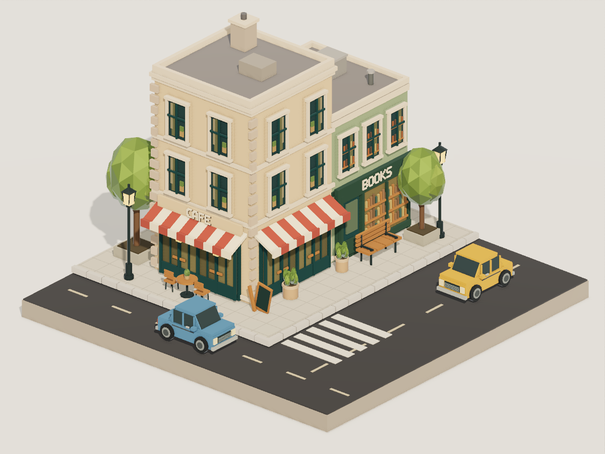
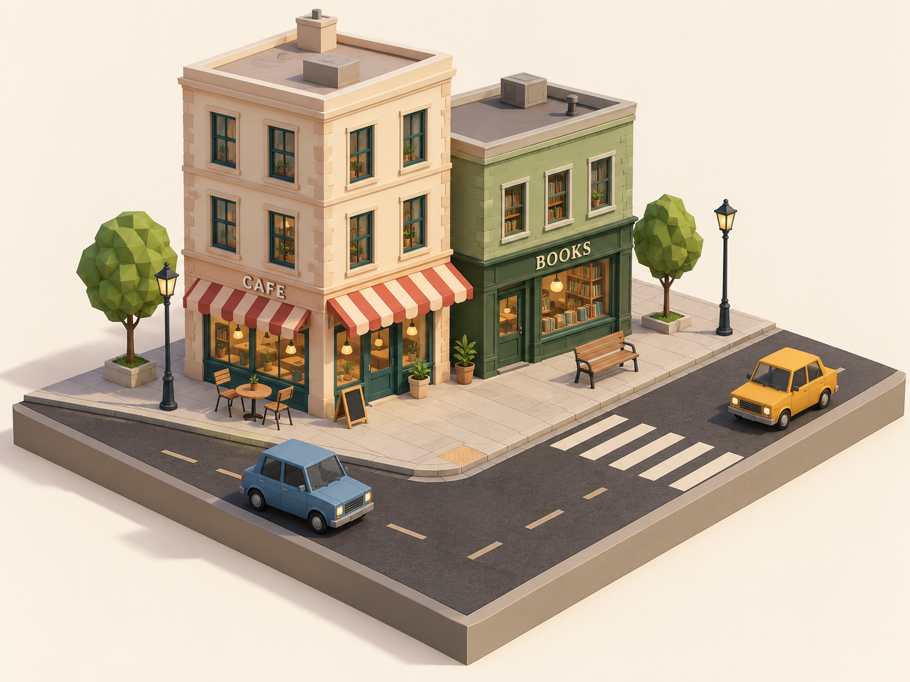
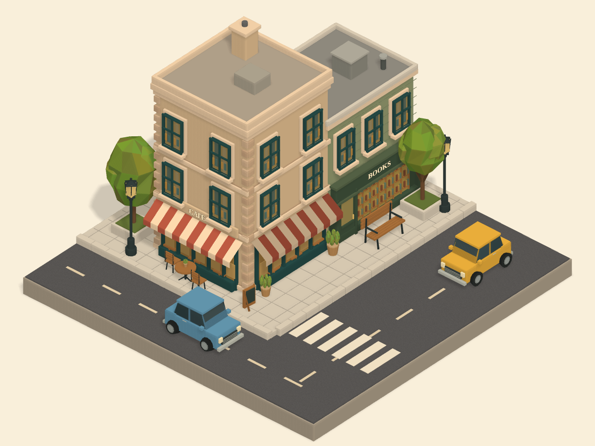
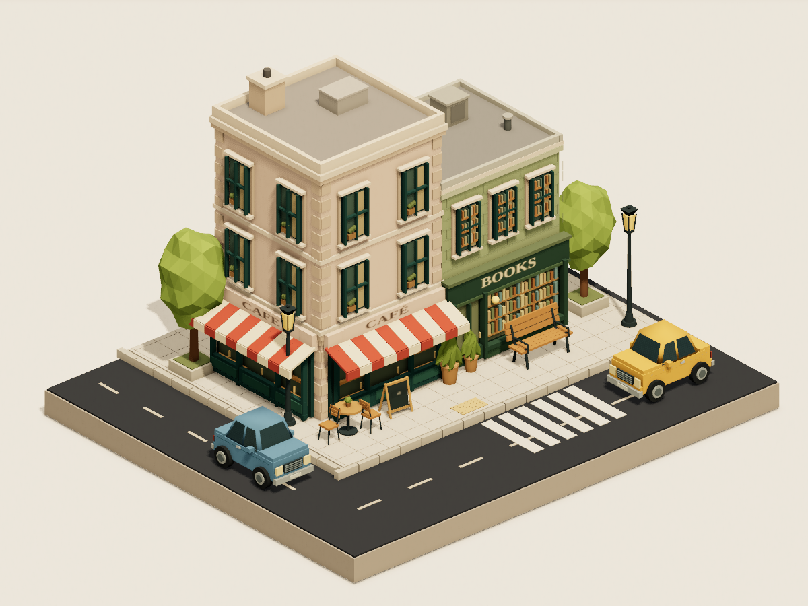

Aperture
7.93 / 10

- First verified image
- 7m 45s
- Author finished
- 16m 19s
- Capture queue
- 0.0 s
- Attempts / failures
- 6 / 1
One shared reference. Three independent authors using Aperture, vGPU and Three.js. The same 25-minute limit, six-capture allowance, image size and software WebGPU capture environment. Two blind visual judges and a separate effort review.




Scores always refer to final images. Click an image to enlarge or open its original PNG. A verified first capture can still contain visual mistakes. Author time includes capture and queue time; actual tokens and dollar costs are unavailable.
Three.js had the strongest observed quality/time tradeoff: first verified image at 5m 31s, completion at 13m 30s, and an 8.15/10 blind visual score. Aperture scored 7.93 and finished in 16m 19s; vGPU scored 7.60 and finished in 13m 37s.
The visual judges split on Aperture versus Three.js for reference fidelity. Both preferred Three.js, then vGPU, then Aperture for overall appeal. The small numerical gap is not a general framework ranking.
Aperture’s clearest opportunities were a 122-second failed-capture lifecycle, washed first-image colors, and repeated sign/transform/lighting corrections. All three final images reproduced exactly; Aperture also matched through Node + Dawn.
Full findings and limitations · Aperture follow-up planSubjective 0–10 scores averaged across two model judges. Weights: composition 25%, landmarks 25%, low-poly style 15%, lighting/materials 20%, finish 15%. Appeal was ranked separately; code quality was not judged.
| Framework | Composition | Landmarks | Low-poly | Light/material | Finish | Weighted mean | Judge totals |
|---|---|---|---|---|---|---|---|
| Aperture | 7.75 | 8.25 | 8.50 | 7.25 | 8.00 | 7.93 | 7.85 / 8.00 |
| vGPU | 7.00 | 7.75 | 8.25 | 7.75 | 7.50 | 7.60 | 7.33 / 7.88 |
| Three.js | 7.75 | 8.50 | 8.25 | 8.25 | 8.00 | 8.15 | 7.68 / 8.63 |
Verification: all three final images reproduced pixel-for-pixel. The frozen Aperture scene also matched through Node + Dawn; see the separate compatibility check.
| Framework | First capture requested | Builds · cumulative | Capture lifecycle · cumulative | Queue · cumulative |
|---|---|---|---|---|
| Aperture | 4m 31s | 8.1 s | 160.6 s | 0.0 s |
| vGPU | 4m 42s | 1.5 s | 15.9 s | 76.7 s |
| Three.js | 4m 19s | 3.0 s | 25.9 s | 67.2 s |
Capture lifecycle includes launch, readiness, rendering, screenshot and cleanup; it is not GPU frame time. Queue-subtracted elapsed is not measured active work. Common setup and judging are excluded. Each author made different modeling and effect choices.